数据挖掘与R语言简介

统计之都（http://cos.name）
统计与数据挖掘
- 统计分析
- EDA（探索性数据分析）
- CDA（验证性数据分析）
- 机器学习
- 数据挖掘
- 商务智能
常用统计方法
- 描述统计
- 回归分析
- 判别分析
- 聚类分析
- ……
数据类型

方法要与数据类型对应
回归分析： \(g(y)=\beta_{0}+\beta_{1}x_{1}+...+\beta_{k}x_{k}\)
y为连续变量 → 普通线性回归
广义线性模型
- y为0-1变量、定序变量、分类变量 → Logistic回归
- y为计数变量 → 泊松回归
描述统计
案例：发改委打的飞机？
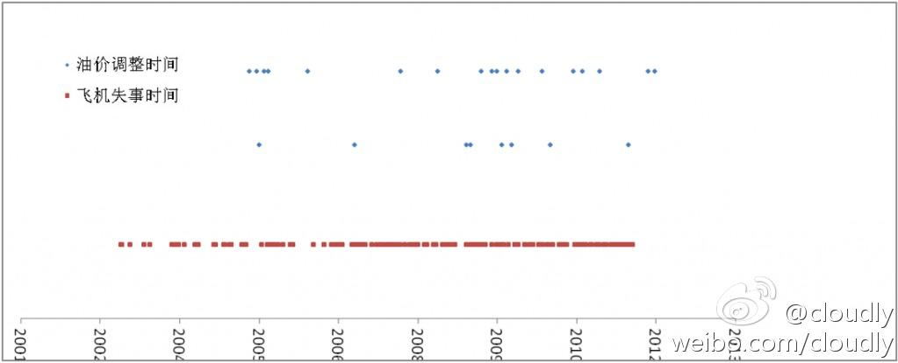
机器学习
有监督的学习

无监督的学习
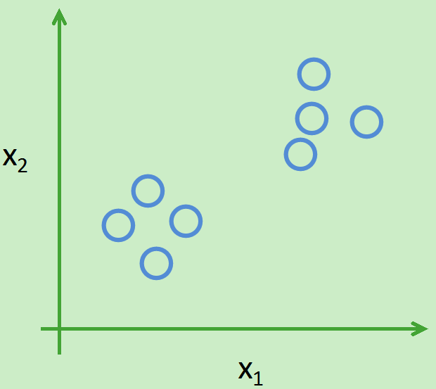
数据挖掘
- 精准广告、直效行销（Direct Marketing）
- 银行业：信用卡评分、客户关系管理（CRM）
- 制造业和医疗
- 欺诈行为预测（Fraud Detection）
- ……
案例：购物篮分析 - 关联规则
啤酒与尿布的故事
案例：决策树 - 分类问题
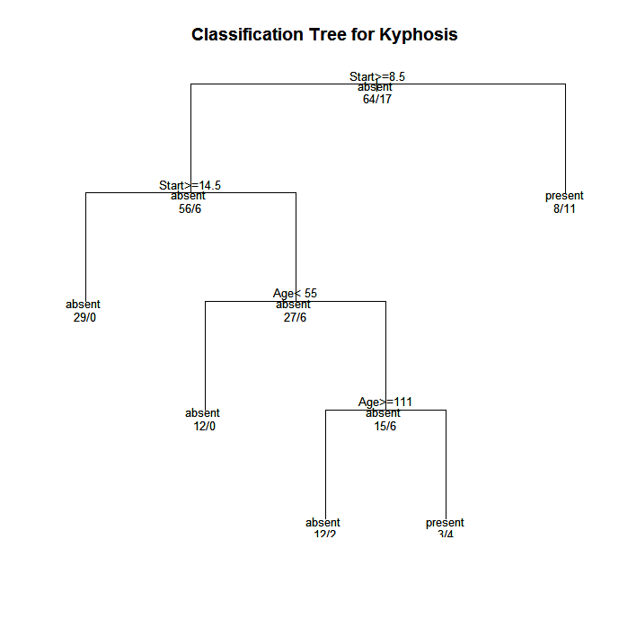
案例：聚类问题
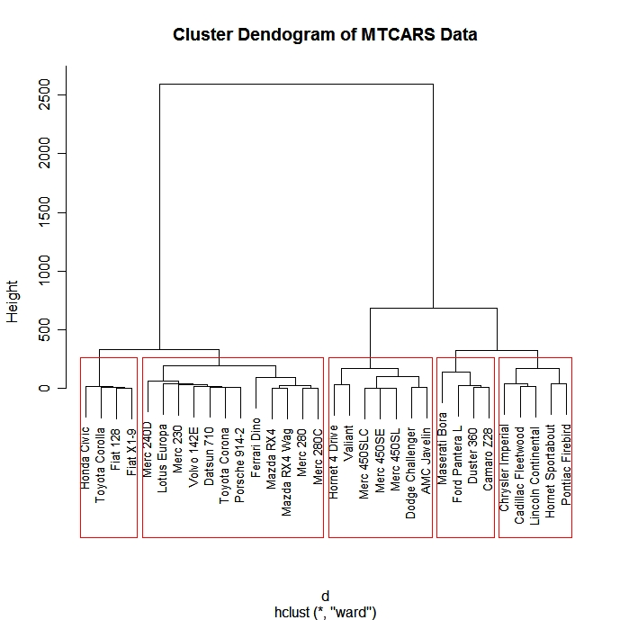
案例：文本挖掘（1）


针对22996首中文歌曲（844个流行歌手）的歌词分析
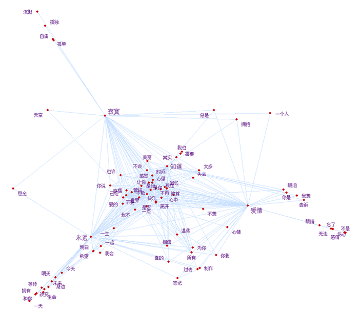
常用统计工具软件介绍
Excel

SPSS
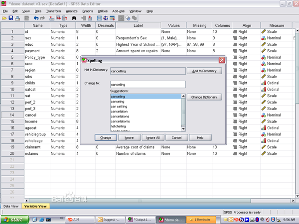
PSPP

山寨版的SPSS，开源的
SAS

R
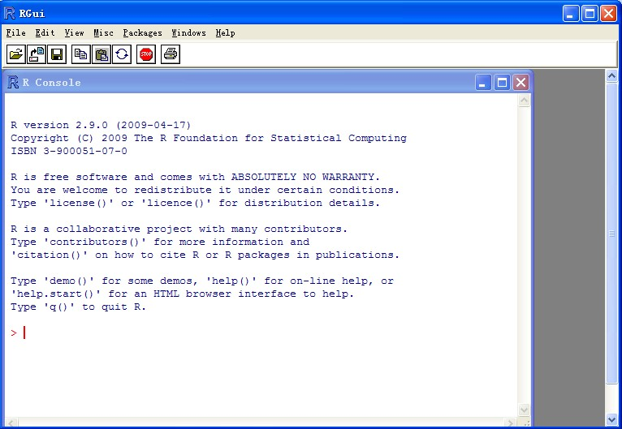
用R做图
library(ggplot2)
qplot(wt, mpg, data = mtcars)
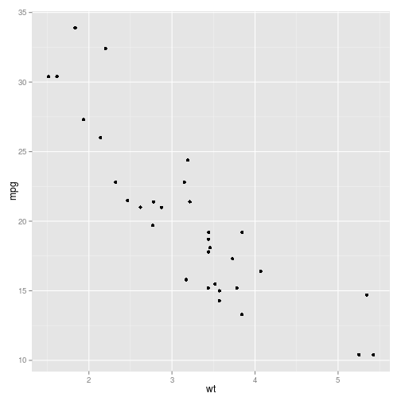
基础绘图案例
# Scatterplot
x <- c(0.5, 2, 4, 8, 12, 16)
y1 <- c(1, 1.3, 1.9, 3.4, 3.9, 4.8)
y2 <- c(4, 0.8, 0.5, 0.45, 0.4, 0.3)

直方图
Y <- rnorm(50)
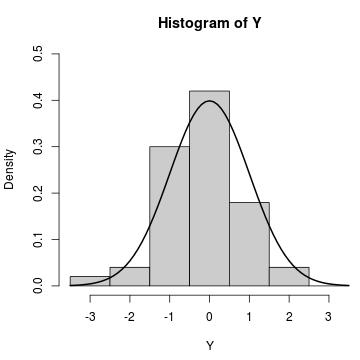
动画图
library(animation)
example(animation)
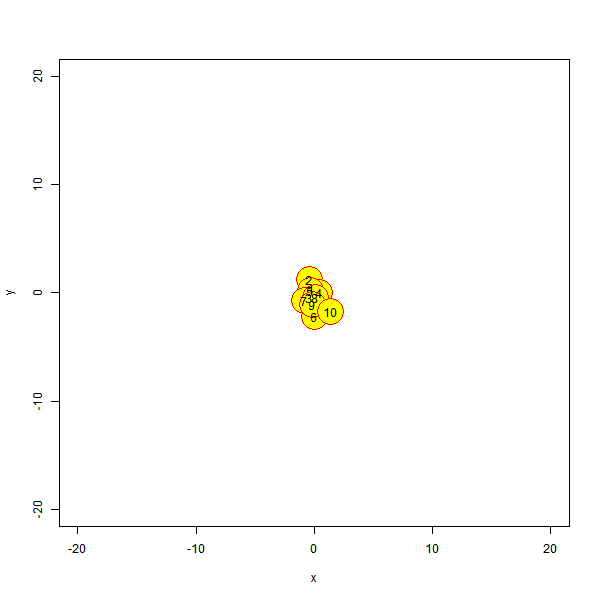
可视化案例
- 气泡图，网址
大航海时代

R的IDE：RStudio

R的IDE：Emacs+ESS

R的IDE：Notepad++ & NppToR

穿马甲的R（1）：Rcmdr
install.packages("Rcmdr")
library(Rcmdr)
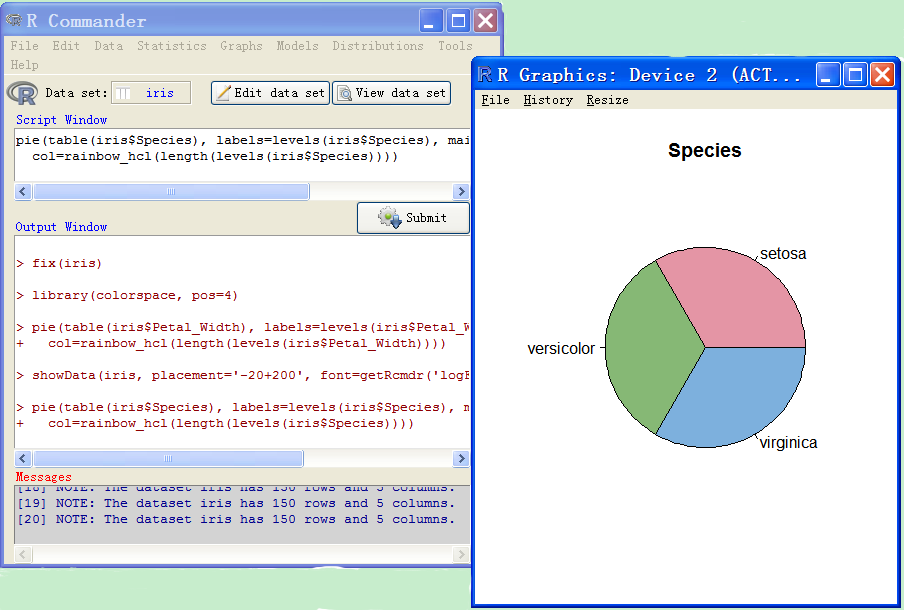
穿马甲的R（2）：rattle
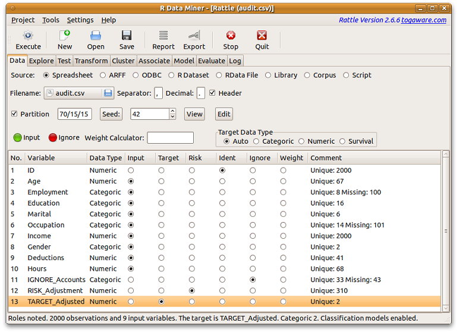
几种软件的比较
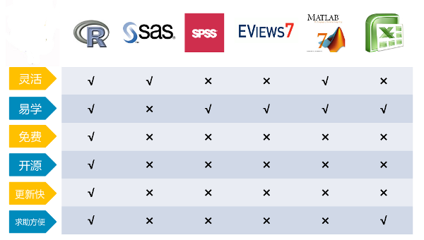

统计学习资源介绍
关于统计之都